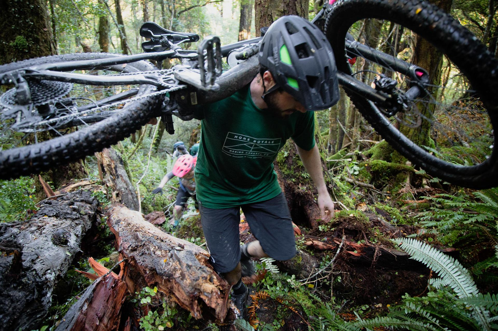
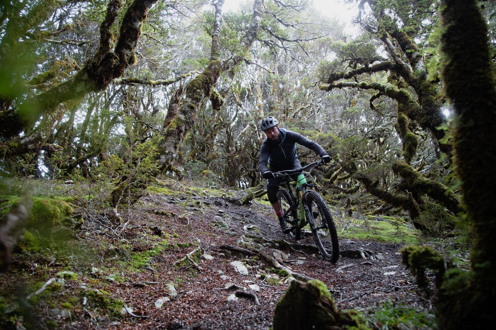
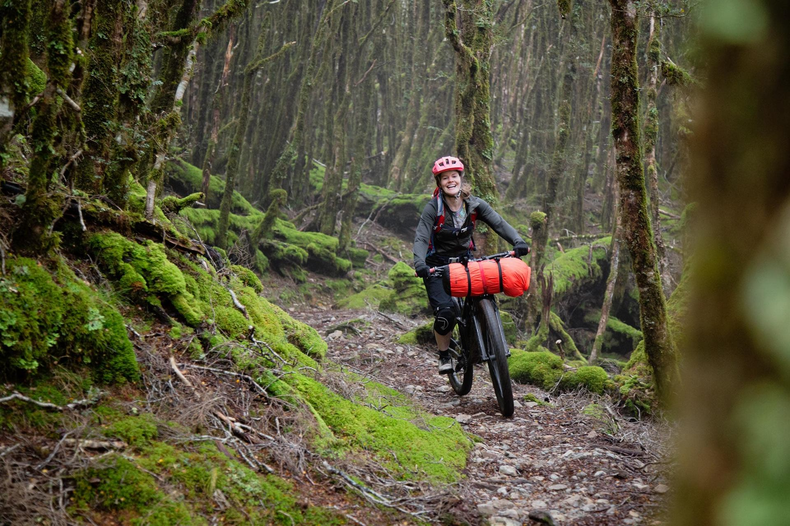
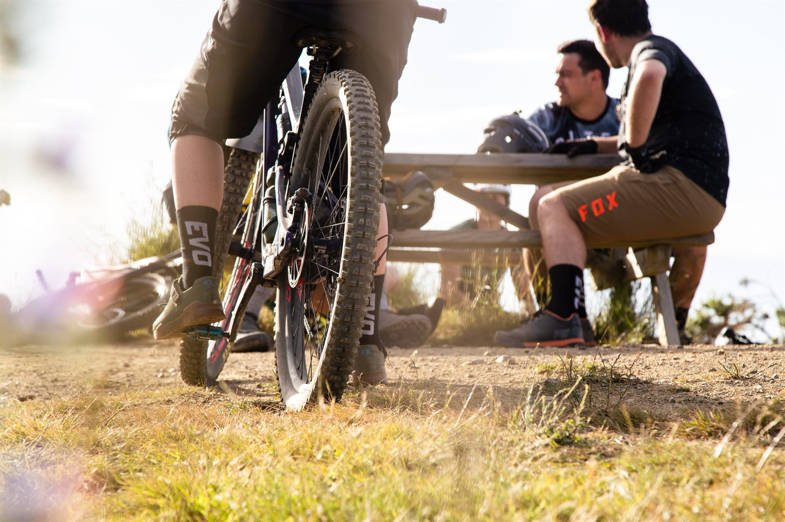
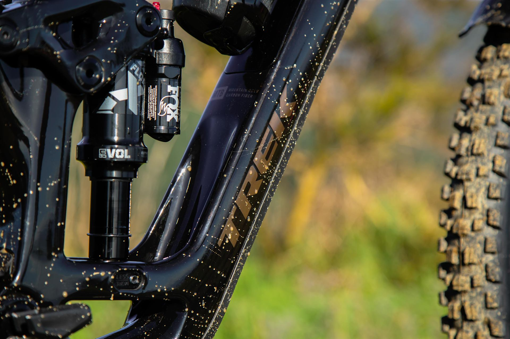
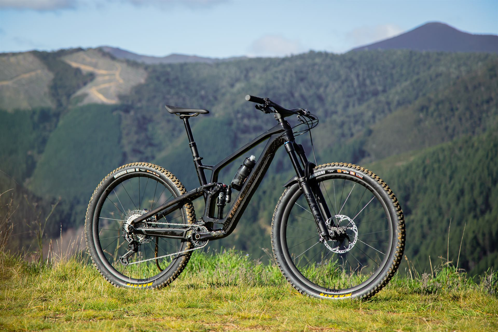

Kia ora, I'm Durand
10+ years running a highly bespoke eCommerce platform end-to-end, with deep expertise across the full product lifecycle — from development and execution through to activation and analysis. Building at pace now, using a combination of AI and a solid foundation in eCommerce fundamentals, from a career spent across the entire digital landscape.
About
With over a decade of hands-on experience, I've helped brands grow, scale, and connect meaningfully with their audiences — blending data-driven strategy with storytelling grounded in the culture and values of Aotearoa.
My core skillset is managing highly bespoke and complex eCommerce operations, end-to-end. Alongside that, I run SaaS tools including Shopify and Klaviyo, where I design and automate email lifecycle flows in real depth. More recently, I've paired that commercial and platform grounding with AI-assisted development — I design, build, and ship digital solutions at a pace legacy processes can't match, without cutting corners on security or maintainability, backed by a practised eye for design and the judgement that comes from over a decade of commercial product and project ownership.
When I'm not building campaigns or refining online experiences, you'll find me exploring the mountains, capturing stories, and staying inspired by the natural world that shapes so much of my creative approach.
Capabilities
Grounded in rock-solid eCommerce fundamentals — the operational core everything else is built on.
Deep understanding of the full suite of digital tools — not just in strategy, but hands-on in the tools themselves.
Transactional, marketing email, SMS, and ads — Shopping and Meta included — automated end-to-end.
AI-accelerated building is native to my workflow, increasing speed, efficiency, and accuracy.
SEO, UX, and CRO — growth thinking applied across the whole customer journey.
From high-level ideation, to roadmapping, to hands-on implementation.
Data drives decision-making, review, and every step in between — not just the headline metrics.
Approach
I work as an AI and eCommerce consultant — often with small businesses that don't have this expertise in-house. Aligning AI strategy with business strategy, ideation if you're not sure where to start, prototyping, consulting, or hands-on delivery — I plug in at whichever stage you need.
Email flows that never got past "welcome"
Manual processes eating up hours every week
No visibility into where customers drop off
Results
Over a decade leading digital and eCommerce functions at Evo Cycles, Torpedo7, and R&R Sport, I've owned full-scale website replatforming projects, built paid and lifecycle marketing programmes from the ground up, and turned messy operational processes into systems that run themselves.
More recently, I've used AI-assisted development to deliver custom tools and integrations in days rather than months — work that would previously have needed a developer sprint or an agency retainer. Want the detail? Full campaign results, growth metrics, and project history are on LinkedIn.
View LinkedInGet in touch
Whether you're looking to reach a wider audience, improve conversion rates, or build a brand that connects and endures, I'd love to hear from you. Ngā mihi nui.
One more thing
Behind the strategy and the systems, I'm also hands-on and creative — whether that's fine-tuning a UX detail or being behind the camera, capturing the content that brings a brand's story to life.
The set below is campaign and brand content produced for Evo Cycles.





